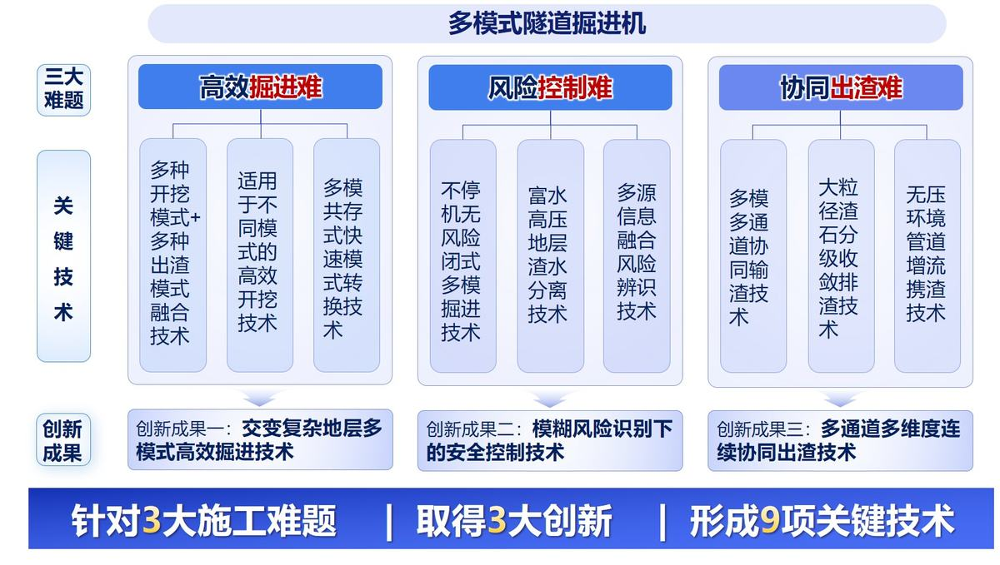
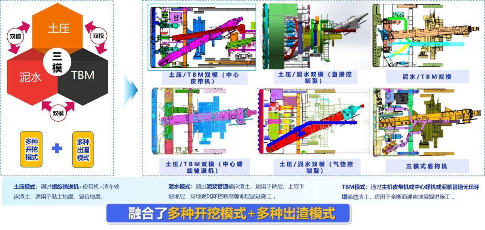
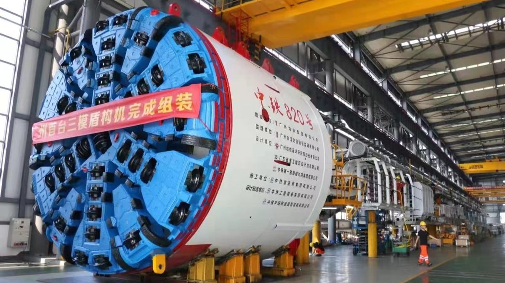

随着粤港澳大湾区、滇中引水等国家系列重大工程的深入推进，对隧道工程建设提出了新的要求，隧道施工面临着掘进距离长、地质软硬交替、埋深大、岩石硬度高、富水岩溶等极其复杂的环境挑战；单一模式的盾构/TBM难以应对复杂性、多变性、多样性的工程需求，均存在明显的局限性，因此，亟需创新研发多模式融合的隧道掘进机。
多模式隧道掘进机设计与施工中存在软硬交替地层高效掘进难、频变富水地层风险控制难和不良地层连续协同出渣难。项目组围绕三大难题，历经多年产学研用联合攻关，实现了多模式隧道掘进机自主设计制造关键技术突破，取得了三项创新成果：
本项目获得授权发明专利21项，实用新型19项，软件著作权6项，制定国家标准2项；获得2023年度国际隧道与地下空间协会(ITA)设备与装备创新大奖、中国铁路工程总公司科学技术进步特等奖等。
钱七虎院士、陈湘生院士等专家组成的鉴定委员会，形成鉴定意见：“首次提出了在继承双模盾构平衡能力、排渣能力的基础上兼具TBM掘进优势的三模掘进机理念，研发了国际首台复合地层三模掘进机设备，该成果在掘进机多模式转换技术领域达到国际领先水平”。该项目成果孵化出100余台多模式隧道掘进机，先后应用于成都紫瑞隧道、珠肇高铁圭峰山隧道、意大利Cefalut铁路隧道等国内外40余项重大工程，增强了中国高端装备的世界竞争力。近三年实现新增经济收入77.13亿，新增利润4.95亿，实现了国产掘进机从单一模式到多模式转变，为交变不良地质工程提供了安全、高效的施工方案。
（1）项目背景及总体思路
随着国家系列重大工程的深入推进，诸如南水北调、粤港澳大湾区、滇中引水等，其中隧道工程最为艰巨，占比超过80%，面临极其复杂的地质、地理和敏感的环境挑战。尤其是粤港澳大湾区建设中，城际铁路施工普遍存在掘进距离长（＞3km）、地质软硬交替、埋深大（＞50m）、岩石硬度高（可达200MPa）、富水岩溶等典型特征；单一模式的盾构/TBM难以应对复杂性、多变性、多样性的工程需求，均存在明显的局限性。多模式隧道掘进机因具有地质适应性强、施工安全等优点，正逐步成为隧道掘进机未来发展方向之一。
多模式隧道掘进机设计与施工中面临三大关键核心难题：1）高效掘进难：在长距离、岩石强度高、地层软硬不均等复杂地层中掘进，开挖系统受力状况复杂，开挖能力的适应性、模式转换灵活性直接影响掘进效率；2）风险控制难：频变富水地层，模式预判不准带来的涌水、涌砂、高压喷涌等未知风险高；3）协同出渣难：开挖渣石粒径级配范围大，高效连续输渣和大粒径渣石排渣协同难，单一通道的出渣模式，难以满足复杂地层的出渣需求。
项目围绕多模式隧道掘进机设计与施工中的三大难题，以交变复杂地层多模式高效掘进技术、模糊风险识别下安全控制技术和多通道多维度连续协同出渣技术三项技术为核心，通过多项关键技术突破，实现了多模式隧道掘进机自主设计制造与产业化生产应用。
（2）主要创新成果
主要创新点一：创新了多种开挖模式+多种出渣模式的融合技术，开发了适用不同掘进模式需求的高效开挖技术，发明多模式共存快速转换技术，实现了多模式隧道掘进机“一机多用、灵活应变”。
【主要知识产权】授权发明专利10项（详见附件1.1、1.3~1.11），实用新型专利8项（详见附件1.22~1.29），软件著作权1项（详见附件1.41）；制定国家标准2项（详见附件1.47、1.48）。
【技术难点】通常情况下，单一模式的盾构在硬岩地层掘进效率低，而单护盾或双护盾TBM难以在复合地层中掘进。对于软硬交替地质掘进，装备的适应性、可靠性与高效掘进成为制约施工装备应用及推广的最大难题。为了兼具多种模式掘进功能且可快速模式转换，需要解决在有限的空间内不同开挖模式和出渣模式结构和功能的融合问题；存在刀盘开口、刀间距等与刀盘破岩、出渣能力的匹配性，驱动转速、扭矩兼容性，以及不同出渣部件共存性等问题；常规换装式模式转换，转换效率低，涉及多个部件的拆装与更换，模式转换时间长达20天以上；软硬交替地质换模频繁，势必影响整个项目的施工工期。
【研究成果】针对隧道掘进机在交变复杂地层掘进效率低的难题，通过对刀盘、驱动、螺机、泥浆管路等部件进行结构和功能融合，实现了各系统之间高效协作，融合了土压、泥水、TBM相互之间不同开挖模式和不同出渣模式的组合，提高了设备的地质适应性；开发了适用于不同模式需求的高效开挖技术，首创了多模共存式快速模式转换技术，使模式转换效率提升了2倍，掘进功效是常规单一模式的近3倍。
1）攻克了多种开挖模式+多种出渣模式融合技术
基于TBM在岩石条件下快速掘进的功能和盾构在软弱地层可平衡开挖面的功能，通过对刀盘、螺机、皮带机、泥浆管路等部件进行结构和功能融合，提出了土压与TBM、泥水与TBM、土压与泥水、土压/泥水/TBM之间的融合技术；当地层含水量不大且稳定性较好时，可采用TBM模式，提升掘进效率、降低刀盘/刀具磨损，满足长距离硬岩隧道高效掘进；当地质自稳性较差且存在较低水土压力时，可采用土压模式，以确保开挖面稳定，实现经济、连续掘进；当存在高水土压力时，可采用泥水模式，以精准控制地表沉降，确保施工安全。解决了盾构技术与TBM技术相互渗透、融合，使单台隧道掘进设备具有更广泛的地质适应性。该项技术已应用于100余台多模式隧道掘进机。
2）开发了适用于不同模式需求的高效开挖技术
基于刀盘切削能耗、切削效率、强度可靠性等性能评价指标，采用参数化设计方法，进行了刀盘拓扑结构和刀具布置优化设计，提出了偏TBM重型刀盘、防冲耐磨设计和可变开口刀盘技术；通过拉紧螺栓紧固性试验研究对螺栓紧固性能进行了优化设计，提出了新型合金刀箱及锁紧技术，大幅度延长了刀具使用寿命和换刀距离；同时提出了双速变换主驱动技术，实现了兼顾多种模式掘进工况的高效、高可靠性开挖。该项技术已成功应用于粤港澳大湾区城际铁路隧道、意大利铁路隧道等共70余台多模式隧道掘进机，综合掘进功效相比常规单一模式提升了近3倍。
3）发明了多模式共存快速转换技术
通过对模式转换流程、模式转换部件、地质工况等综合评价，研制了快拆式刀盘刮渣结构、翻折式溜渣槽等模式兼容的跨模式结构，转换过程无需过多对部件进行改造；发明了可伸缩式溜渣机构，通过控制溜渣机构伸缩来适应不同模式的掘进需求；有效解决了传统双模盾构换模过程复杂，模式转换效率低的难题，相比常规模式转换，实现了模式转换的少人化、绿色化。该项技术已成功应用于珠肇高铁圭峰山隧道、意大利铁路隧道等共30余台多模式隧道掘进机，模式转换效率提升了2倍以上。
主要创新点二：发明了中心闭式掘进技术和渣水分离技术，降低了不确定突泥突水及富水高压喷涌风险；开发了多源信息融合平台，指导掘进模式判断和选取，实现了频变富水地层风险精准管控。
【主要知识产权】授权发明专利7项（详见附件1.2、1.12~1.17），实用新型专利4项（详见附件1.9~1.12），软件著作权4项（详见附件1.42~1.45）。
【技术难点】隧道施工风险识别及安全控制主要考虑地质均一性、富水程度、岩溶裂隙发育情况等因素。对于频变富水地层掘进，施工地质难以准确识别，采用TBM模式掘进，可能出现突泥、突水、卡机等风险；采用土压模式掘进，可能出现高压喷涌、地表失压沉降等风险；采用泥水模式掘进，可能出现刀具异常损坏，掘进功效低，带压进仓风险。模式选用不当，极易造成开挖系统以及出渣系统频繁失效，影响施工安全；传统模式选择靠人为经验判断，地质突变、模式预判不准等未知风险高。
【研究成果】发明了闭式多模掘进技术，降低了频变富水地层不确定的突水突泥风险；基于析水式渣水分离和减压防喷思路，首创了富水高压地层渣水分离技术，解决了螺旋机高压喷涌风险；开发了多源信息融合风险辨识技术，使黑暗掘进可探、可视、可知，实现了频变富水地层风险精准管控。
1）发明了不停机无风险闭式多模掘进技术
针对TBM模式在不良地层存在的突水突泥风险，模拟了开挖仓中心出渣通道多扰动源状态下的流变场，揭示了中心区域渣石流动规律，发明了闭式中心螺旋出渣模式，中心螺旋机作为一个整体封闭的出渣通道，将刀盘开挖仓与设备人员作业区域隔离，同时将土舱粉尘隔离，提高了TBM施工环境的安全性和作业效率。在泥水或土压平衡模式下，中心螺旋机通过伸缩结构后退，中心压力隔板封闭，实现土舱封闭，开挖面建压作用；整个掘进过程为封闭环境，在突遇不良工况下，实现了不停机安全掘进。该项技术已成功应用于珠肇高铁圭峰山隧道、深大城际等共20余台多模式隧道掘进机。
2）首创了富水高压地层渣水分离技术
基于析水式渣水分离思路，发明了U型转渣装置，内置二级转渣螺旋机，在转渣装置底部设计析水装置，在析水装置底部安装排水、冲刷等管路；干渣通过转渣螺机和皮带机排出，水渣通过泥浆管路排出，实现了渣样状态可控可调和渣水分离的目的；基于减压防喷+渣水分离思路，发明了“控气助排+渣水分离”技术，螺旋机尾部与空气辅助模块、泄压箱、筛分装置和泥浆净化一体机等连接，螺旋机内高压泥水经过控气降压和渣水分离筛分净化后低压排出，解决了富水高压地层螺旋机喷涌风险。该项技术已应用于珠肇高铁圭峰山隧道、广佛环线等共20余台多模式隧道掘进机。
3）开发了多源信息融合风险辨识技术
通过对地层变形机理的研究，开发了盾壳间隙检测及安全预警系统，实时采集盾壳-地层-管片多源多点数据，实现了主机姿态实时检测和卡机安全预警；建立土仓压力、盾尾压力和油脂腔压力之间的映射关系，反馈调整掘进参数；通过刀具状态监测、渣样状态反演刻画近前方在掘地层的软硬分层和不均匀程度；基于对以上多源信息的融合，构建了地质适应性评价量化计算模型，开发了地质评价及模式选取平台，辅助进行模式判断和选择，使黑暗掘进可探、可视、可知，实现了频变富水地层风险精准管控。该项技术已成功应用于珠肇高铁圭峰山隧道、广州地铁7号线等共10余台多模式隧道掘进机。
主要创新点三：提出了多模多通道协同输渣技术，首创了大粒径渣石分级收敛排渣技术，发明了无压环境管道增流携渣技术，实现了各种不良地层多通道多维度连续协同出渣。
【主要知识产权】授权发明专利4项（详见附件1.18~1.21），实用新型专利7项（详见附件1.13~1.19），软件著作权1项（详见附件1.46）。
【技术难点】复杂不良地层开挖渣石粒径级配范围大，高效连续输渣和大粒径渣石排渣协同难，单一通道的出渣模式，易出现刀盘泥饼、大渣块堵仓、堵管、卡泵、皮带机漏水掉渣等问题，难以满足复杂地层的出渣需求。
【研究成果】提出了多模多通道协同排渣技术，解决了各种复杂不良地层掘进连续高效输渣问题；首创了大粒径渣石分级收敛排渣技术，实现了不同粒径渣石逐级收敛排出，解决了大粒径渣石堵仓、滞排难题，每环减少人工排渣2~3次；发明了无压环境管道增流携渣技术，解决了皮带机漏水掉渣问题，为TBM模式提供了一种新的出渣方案。
1）提出了多模多通道协同输渣技术
研制了基于螺旋机控渣防滞排的多通道输渣技术，可根据具体地层选择最佳出渣路径。①直排管+泥浆泵组合，可用于泥岩、粉砂、粉土等细颗粒含量较多地层；②螺旋机+稀释箱组合，适应于大粒径岩石强度高的渣石与泥岩地层；③螺旋机+辊齿破组合，适应于大粒径软岩或软土地层；④螺旋机+采石箱组合，适应于砂卵石地层、滞排严重地层；⑤螺旋机+辊齿破+采石箱组合，适应于砂卵石地层，强度不高岩层；解决了应对各种复杂不良地层掘进连续高效输渣问题。该项技术已成功应用于成都紫瑞隧道隧道、广佛环线等共10余台多模式隧道掘进机，在成都紫瑞隧道隧道施工中实现了大粒径富水砂卵石、高粘度泥岩及其复合地层大直径泥水盾构连续高效掘进施工。
2）首创了大粒径渣石分级收敛排渣技术
针对破碎带、砂卵石等大粒径含量多的地层，开挖仓及出渣系统易出现滞排、堵管卡泵、排渣效率低等问题。基于分级收敛处理理念，首创了大粒径渣石分级处理技术，一级收敛通过刀盘破岩和刀盘格栅对渣石进行初步限径；二级收敛，通过螺旋机节距和转速控制开挖仓径渣石进入排渣系统的渣量和粒径大小；三级收敛，通过采石箱或破碎机将中等粒径石块筛出或破碎后排至皮带机；四级收敛，小粒径渣石经过二次格栅后通过排浆管路排出；实现了渣石分级排出和增大排渣粒径的目的，提高了排渣效率，降低了大粒径渣石堵管、卡泵的概率。该项技术已成功应用于成都紫瑞隧道隧道、珠肇高铁圭峰山隧道等共10余台多模式隧道掘进机，相比传统处理方式，每环减少人工排渣2~3次。
3）发明了无压环境管道增流携渣技术
针对TBM模式在富水地层中的皮带机漏水掉渣问题，建立了“仓内无压环境”流固耦合仿真模型，研究了开挖仓和管路渣浆流场分布及岩渣颗粒运动特性，构建了无压环境管道渣石启动流速和渣石输送速度选择模型，为系统流量流速等参数选择提供了理论依据；搭建了室内泥浆循环试验平台，优化了仓内冲刷和管路布置，验证了TBM模式无压环境管道携渣的可行性，提出了管道增流携渣辅助出渣方案；解决了TBM模式在富水地层皮带机漏水掉渣问题，同时避免了开挖仓粉尘溢出，保证人员、设备安全，为TBM模式提供了一种新的出渣方案。该项技术已成功应用于广州地铁7号线、广东太平岭核电厂排水隧洞等共3台多模式隧道掘进机，应用效果显著。
（3）与当前国内外同类技术先进性水平比较
成果对比
国内外同类技术
本项目成果
对比结果
创新点一
多种开挖模式+多种出渣模式融合技术
两种模式融合
融合了三种平衡+三种出渣模式，并在工程中成功应用。
填补空白
适用于不同模式的高效开挖技术
综合掘进效率低
掘进效率是常规单一模式的近3倍。
优于
多模共存式快速模式转换技术
模式转换复杂
转换过程无需过多对部件改造，模式转换效率提升了2倍以上。
优于
创新点二
不停机无风险闭式多模掘进技术
在TBM模式突泥涌水风险较大。
采用中心螺机出渣方式，在任何模式下均可快速封闭，安全性高。
优于
富水高压地层渣水分离技术
无
提出了控气助排+渣水分离技术，解决了富水环境螺机喷涌问题。
填补空白
多源信息融合风险辨识技术
风险监测方式单一，准确性低
多源信息融合，提高了风险识别的准确性。
优于
创新点三
多模多通道协同输渣技术
出渣通道单一
针对不同工况，可选择不同通道进行排渣。
优于
大粒径渣石分级收敛排渣技术
无
基于多级收敛处理理念，提高了排渣效率，每环减少人工排渣2~3次。
填报空白
无压环境管道增流携渣技术
无
实现TBM模式下管道辅助增流携渣，解决了皮带机漏水掉渣问题。
填补空白
【综上所述】该项目解决了多模式隧道掘进机“高效掘进难、风险控制难、协同出渣难”三大施工难题，形成了交变复杂地层多模式高效掘进技术、模糊风险识别下安全控制技术、多通道多维度连续协同出渣技术三项创新技术，先后成功应用于国内外重大工程，获得国内外同行的高度好评和广泛认可。

